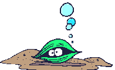

Nitrogen
Phosphorous
Dissolved Oxygen
PH
Water Temp
Salinity
Water Clarity Depth
Loading...

Surface
Bottom
Clear
Data Sources:
Water Quality Data:
Chesapeake Bay Program
Oyster Data (1929-2004):
Maryland DNR
, (1950-2012):
NOAA Fisheries
Chesapeake Bay Shoreline GIS Data:
Virginia Institute of Marine Science
© 2015, Stacie Kuamoo